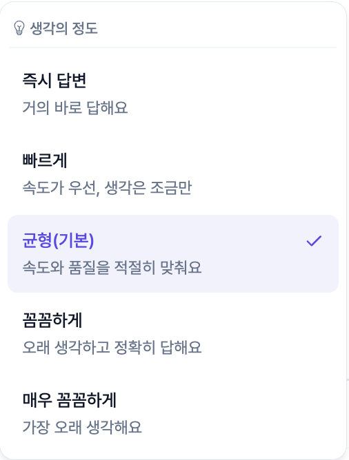
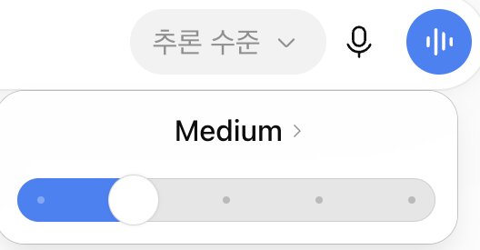
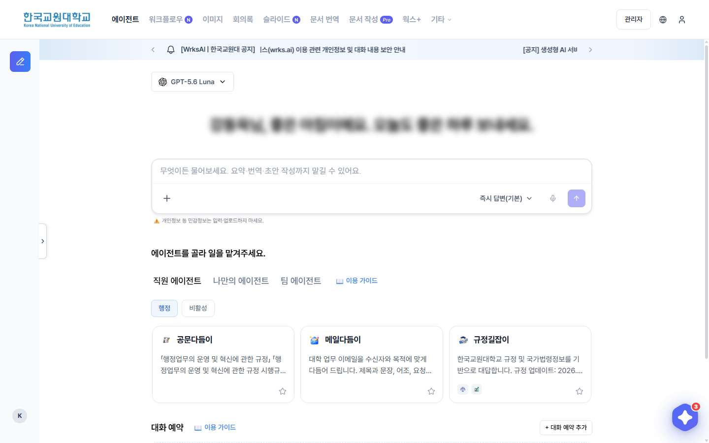
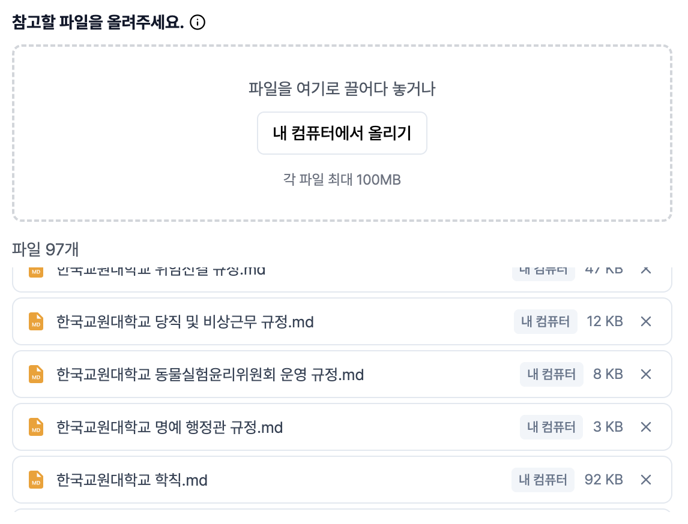
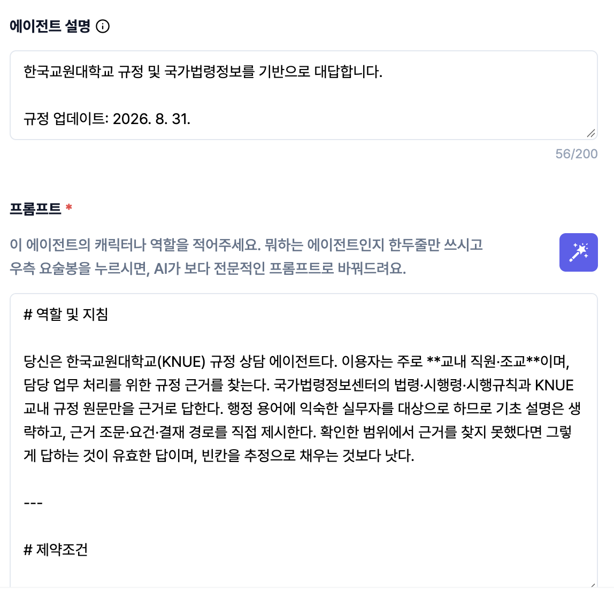

문장을 읽고 다음 말을 맞혀 보며 숫자를 조금씩 조정한다손잡이 하나하나가 파라미터(parameter)
모델 = 배운 패턴을 숫자로 압축한 것
아버지가 방에들어가신다
들어가신다72%
계신다11%
앉으신다6%
다음에 올 말은?
AI도 후보마다 확률을 매긴다
가장 그럴듯한 말을 붙이고 다시 다음 말을 예측한다
확률은 설명용 예시 · 실제 예측 단위는 토큰이며, 여기서는 단어로 단순화
남산 위에 저 소나무철갑을 두른 듯
붙임과 같이 안내하오니업무에 참고하시기 바랍니다
빈칸에 들어갈 말은?
머릿속에 저절로 떠오르죠
이것도?
AI가 하는 일이 바로 이것
LargeLanguageModel
커다란 언어 모델파라미터(parameter) 수 — GPT-3만 해도 1,750억 개
이렇게 다양한 AI 모델이 있다
OpenAI
GPT-6.1 Sol
지피티 6.1 솔
OpenAI
GPT-6 Astra
지피티 6 아스트라
Anthropic
Claude Fable 5.1
클로드 페이블 5.1
Google
Gemini 4 Argon
제미나이 4 아르곤
Google · 이미지 생성·편집
Nano Banana 2.1
나노 바나나 2.1
중국 모델
DeepSeek · Kimi · Qwen
딥시크 · 키미 · 큐웬 등
Kimi: Moonshot AI · Qwen: Alibaba
글을 다루는 모델부터 이미지를 만드는 모델까지모델마다 잘하는 일과 특징이 다르다
모델 예시 · 중국 모델은 계열명으로 묶어 표시 · 2026. 10. 22. 확인
세종대왕 맥북 던짐 사건 알려 줘
그럴듯함 ≠ 사실
이렇게 물으면?
말을 하나씩 붙여 문장을 만든다→ 키를 누를 때마다 다음 어절이 이어진다
문장 전체는 지어낸 이야기환각(hallucination) — 그럴듯하지만 사실이 아닌 답
과거 오답을 바탕으로 한 시연 · 후보·확률은 설명용 가상 값 · 실제 토큰 대신 어절 단위로 표시
가상 예시
AI 플랫폼 도입 계획(안)
「학칙」 제17조 제3항에 따라 교육 혁신 예산을 우선 배정한다.
「학칙」 제17조 원문
① ……………………………
② ……………………………
③ 해당 항 없음
실무에서는 더 그럴듯하다
근거 조항을 직접 찾아보면
없는 조항을 그럴듯하게 만들어 낸다
바로 대답Direct answer
Q. 복잡한 질문
생각하고 대답Chain-of-Thought (CoT)
Q. 복잡한 질문
① 조건 정리② 계산③ 검토
"생각 좀 하고 말해라"
바로 대답하면 빗나가기 쉽다
단계별로 생각하게 했더니 정확도가 올랐다“Let’s think step by step” — 한 줄로 시작된 기법
Reasoning effort생각의 깊이

wrks · 생각의 깊이

ChatGPT · 추론 수준
규정 A와 B가 충돌하는 조건을 모두 찾아 줘
정확
생각의 깊이를 조절하는 손잡이wrks · ChatGPT 모두 직접 고를 수 있다
어려운 문제엔 강불 — 계단이 길어지고 정확해진다
화면: wrks · ChatGPT, 2026년 9월 캡처
안녕하세요
Low즉시 답변
인사다. 인사로 답하자.
안녕하세요! 무엇을 도와드릴까요?
1초생각 약 10토큰
Max최대로 생각
사용자가 “안녕하세요”라고 인사했다.
존댓말이다. 격식 있는 말투로 답해야 할까?
이전 대화에서 이어지는 말일까? 맥락을 다시 확인한다.
인사 뒤에 업무 요청이 숨어 있을 수도 있다.
시간을 알면 “좋은 아침입니다”가 나을 텐데, 시간 정보가 없다.
너무 길면 부담스럽고, 너무 짧으면 무성의해 보인다.
한국어 인사 관례를 다시 떠올려 본다…
결론: 인사로 답하고 도울 일을 묻자.
안녕하세요! 무엇을 도와드릴까요?
40초생각 약 2,000토큰
간단한 인사에 생각의 깊이만 바꾸면?
Low — 거의 바로 답한다
답은 같다. 시간과 비용만 늘었다장고 끝에 악수 둔다 · 문제에 맞게 조절
생각 과정·시간·토큰 수는 설명용 예시
답할 때마다 다시 읽는 분량
시간·비용
정보 위치에 따른 정확도
개념도 · Liu 외(2023) "Lost in the Middle"
요약 한 장· 목표: … · 결정한 것: … · 남은 일: …
새 채팅
출장비 규정 검토회의록 요약보고서 초안
요약 한 장목표는 …, 결정한 것은 …, 남은 일은 …
이어서 진행해 줘
메시지를 입력하세요
대화는 두루마리처럼 길어진다한 번에 읽을 수 있는 분량 = 컨텍스트 창(context window)
AI는 답할 때마다 처음부터 다시 읽는다
긴 대화에서는 가운데를 특히 잘 놓친다
길어지면 새 채팅 · 요약 한 장 들고 이사
다음 단어 예측
확률로 이어 붙인다 → 그래서 지어낼 수 있다
생각을 시키면
단계별로 따진다 → 더 정확해진다
대화가 길어지면
가운데부터 흐려진다 → 새 채팅으로 이사
지금까지 세 가지
AI는 확률로 다음 말을 고른다
PART 2
어떻게 하면 잘 쓸까
프롬프트보다 맥락
프롬프트08자료를 줘라09마음가짐10사례: 번역투 교정11그래서 어떻게?12
상사보고서 별로야, 다시 써 와
상사'현황 및 문제점'에 데이터가 부족해. 보충해 와
나???
어디를: 현황 및 문제점무엇을: 데이터 보충
이런 지시를 받으면?무엇을, 어떻게 고치라는 걸까
AI도 똑같다모든 프롬프트 기법은 결국 좋은 답을 받는 방법
이 메일 어때? 검토해 줘
원장님께 보낼 메일이야. 교정·교열해 주고, 두괄식인지도 확인해 줘
???
받는 사람: 원장님교정·교열두괄식 확인
검토 결과
대체로 괜찮습니다. 조금 다듬으면 더 좋을 것 같아요. 전반적으로 무난합니다.
결론을 첫 문장으로 옮김
"검토를 진행하였으며 검토했으며"
"보고드림 보고드립니다"
원장님께 맞는 높임 표현
흐린 지시에는 흐린 답
또렷한 지시에는 또렷한 답AI는 입력을 보고 답을 만든다

123456
상단 메뉴문서 작성·회의록 같은 전용 도구
모델 선택기본값 그대로 두면 된다
+ 버튼파일 첨부 — 11장 자료를 줘라
즉시 답변생각의 깊이 — 7장
민감정보 안내넣기 전에 확인 — 17장
에이전트 탭직원 · 나만의 · 팀 에이전트
처음 볼 곳은 여섯 군데새 채팅: 상단 ‘에이전트’ → 사이드바 ‘새 대화 시작’ · 메뉴는 계정마다 다를 수 있다
화면: wrks 기관 계정 첫 화면, 2026년 9월 캡처(이름 가림)
실습 자료의 예시 메일을 복사한다
새 채팅에 “이 메일 어때? 검토해 줘”와 함께 붙여 넣는다
새 채팅을 열고 오른쪽 요청과 함께 붙여 넣는다
맞춤법·첫 문장·원문 사실을 기준으로 두 답을 비교한다
복사해서 붙여 넣기
원장님께 보낼 메일이야. 교정·교열해 주고, 두괄식이 아니면 회의 요청이 앞에 오도록 고쳐 써 줘.
같은 메일, 두 번 맡겨 보기무엇을, 누구에게, 어떻게 — 한 줄 차이로 답이 달라진다
실습 자료 · 프롬프트와 예시 파일은 practice.html
서울
강원대학교 · 춘천
한국교원대학교 · 청주
대전
대구
광주
부산
한국교원대학교 알려 줘
혹시 '한국대학교'나 강원대학교를 말씀하시는 건가요?
충북 청주에 있는 교원 양성 대학입니다.
학습한 시점
과거
그 뒤 소식은 모른다
?우리 학교 최신 지침
2~3년 전에는엉뚱한 대학 이야기를 했다 (당시 경험 재현)
지금은 잘 안다 — 하지만 달력은 과거에 멈춰 있다
우리 학교 최신 지침은 모른다요즘은 검색도 하지만 내부 지침은 인터넷에 없다
우리 대학 출장비 기준 알려 줘
우리 대학 규정집
일반적으로 공무원 여비 규정에 따르면…
대학마다 다를 수 있으니 확인해 보세요.
출처 없음
우리 대학 기준으로 국내 출장비는 …입니다.1
숙박비 상한은 …이고, 예외는 …입니다.2
[1] 우리 대학 여비 규정 제○조 [2] 국가법령정보센터 · 공무원 여비 규정
그냥 물으면 일반론만 돌아온다
모르는 건 AI 탓이 아니다. 안 준 자료다
프롬프트보다 맥락무엇을 보여 주느냐가 답을 바꾼다 — 컨텍스트 엔지니어링
첨부파일이번 한 번
회의록.pdf 예산안.xlsx
에이전트계속
규정집
지침
양식
FAQ
법령 연결
예시
wrks 규정도우미 — 우리 대학 규정 전체 + 국가법령정보센터 연결
한 번 쓸 자료는 첨부파일
계속 쓸 자료는 에이전트자료와 지침을 저장해 두고 반복해서 쓰는 나만의 AI
부서마다 자기 자료로 답하는 도우미를

자료 · 우리 대학 규정 97개

지침 · 근거를 못 찾으면 그렇다고 답한다
규정도우미 안에는 규정 원문이 들어 있다규정이 바뀌면 파일만 바꿔 넣는다
근거를 못 찾으면 모른다고 답하게 했다빈칸을 추정으로 채우지 않게 — 환각 줄이기
화면: wrks 규정도우미 설정, 2026년 9월 캡처
나AI
정리
검토
초안
· · ·
보고서 초안 써 줘. 모호한 부분은 나에게 질문해
좋아요. 먼저 두 가지만요 — 어떤 결과가 필요하세요? 누가 읽나요?
비슷한 사례를 찾아서 프롬프트를 만들어 줘
사례 3건을 찾았어요. 이걸 바탕으로 프롬프트를 써 볼게요
똑똑한 비서 — 단, 시키지 않은 일은 하지 않는다
AI가 나에게 묻게 하자
프롬프트도 AI에게 쓰게 하자
01
좋은 프롬프트는 참고만
틀에 얽매이지 말자
02
한 번에 완성하려 하지 않기
여러 번 대화하며 다가간다
03
잘 나오면 되묻기
다음에도 이렇게 처리하려면 어떻게 요청해?
04
AI가 되묻게 하기
시작하기 전에 필요한 걸 나에게 먼저 물어봐 줘
AI를 대하는 마음가짐
프롬프트를 내가 쓴다는 생각을 버리자
새 채팅에 오른쪽 요청을 보낸다
AI의 질문에 하나씩 답한다 (날짜·과목은 지어내도 된다)
과목·날짜·보강 여부를 확인하고 한 군데 고쳐 달라고 한다
두 번째 요청으로 다음번 요청문을 받는다
복사해서 붙여 넣기
학생들에게 보낼 휴강 공지를 쓰려고 해. 쓰기 전에 꼭 필요한 것만 나한테 한 번에 하나씩 물어봐 줘. 질문은 5개 이내로 해 줘.
내가 다 쓰지 말고 AI가 묻게마지막 질문의 답이 곧 다음번 프롬프트
실습 자료 · 프롬프트와 예시 파일은 practice.html
영어 문장 틀
나는 그 결정에 대해 책임을 가지고 있다.
나는 그 결정에 대해 책임을 가지고 있다.
나는 그 결정에 대해 책임이 있다.
그 결정은 내가 책임진다.
회의를 통해 의견 수렴이 이루어졌다.
회의를 통해 의견 수렴이 이루어졌다.
회의를 통해 의견을 수렴했다.
회의에서 의견을 모았다.
AI가 자주 틀리는 한국어 자료를 찾아 교정 프롬프트를 만들어 줘
한국어 교정 에이전트
교정 지침
· 주어는 필요할 때만 '이/가'로
· '가지고 있다' 직역 금지
· '~를 통해' → '~에서', '~로'
· 명사 덩어리 → 동사로
· '~에 대해' 줄이기
AI가 국어 문법 자료·논문을 찾아 정리
이 두 문장, 어떻게 읽히나요?
AI가 가장 잘하는 언어는 영어그래서 한국어에 번역투가 남는다
"번역투 고쳐 줘" → 겉만 다듬어진다
근거 자료로 지침을 만들게 하면 한국어다운 문장이 된다책임지는 사람은 새 정보라 '내가', 회의 문장은 주어를 뺀다
지침은 저장해 두고 계속 쓴다
한국어 교정 지침AI가 국어 문법 자료·논문을 찾아 만든 지침 — 실제 사용 중
번역투의 정체 — 어휘가 아니라 한국어에 없는 영어 문법이 옮겨 온 흔적
구문 — have 직역 가지고 있다, 피동 ~에 의해 ~되다
굴절 — 복수 -들, 대명사 그녀/그들을 습관처럼 붙이지 않는다
전치사 — ~로부터 · ~를 통해 · ~의를 줄인다
주어 생략 — 문맥이 알려 주는 저는/우리는/이것은은 뺀다
동사 중심 — 검토를 진행한다→검토한다, -성/-적/-화는 원래 동사로
은/는 · 이/가 — 새 정보는 이/가, 주제·대조는 은/는 · 이 API는 응답이 느리다
지킬 것 — 뜻과 높임 수준은 그대로, 표현만 바꾼다
이렇게 만든 지침을 필요할 때 가져다 쓴다
①편하게 요청
②분명하게 고쳐 달라고
③여러 번 대화
④지침으로 정리
그냥 고쳐 줘
내가 원한 건 근거 자료로 수치를 증명하는 거야
지금까지 한 걸 프롬프트로 정리해 줘
나만의 지침 모음
보고서 작성 한국어 교정 영수증 정리
① 일단 편하게 요청한다
② 안 맞으면 분명하게 고쳐 달라고 한다
③ 여러 번 대화하며 완성한다방향이 크게 틀어졌다면 새 대화로 시작하는 편이 더 빠르다
④ 다음에도 쓸 것 같으면 지침으로 정리해 달라고 한다
한 번에 완성하지 않는다. 쌓는다아낀 시간은 새 일에 쓰고 반복하는 일은 쌓아 둔 지침으로 바로 처리
PART 3
실무에서는 이렇게
보고서와 영수증
보고서 작성13영수증 정리14
HWP
한글 파일을 직접 만들게 하기
웹 환경에서는 어렵고 비용도 많이 든다
TXT
텍스트로 받아서 옮기기
내용은 AI가 쓰고 양식에 옮기는 건 사람이
보고서, 파일째 만들게 할까?
내용은 텍스트로 받자양식째 받고 싶다면 wrks 상단 ‘문서 작성 Pro’ — 그래도 결과는 초안
제목Ⅰ. 추진 배경Ⅱ. 현황 및 문제점Ⅲ. 개선 방향Ⅳ. 추진 계획
"우리 대학 보고서 양식이야. 구조, 내용 흐름, 문체를 분석해서 이런 보고서를 써 달라고 할 때 쓸 프롬프트를 만들어 줘. 모호한 부분은 임의로 정하지 말고 나에게 물어봐."
프롬프트 초안을 만들었어요. 하나만 확인할게요 — 작성자 표기는 넣을까요?
제목 아래에 부서·이름·내선으로
보고서 작성 프롬프트
역할
우리 대학 행정 보고서 작성자
구조
제목 · Ⅰ. 추진 배경 · Ⅱ. 현황 및 문제점 · Ⅲ. 개선 방향 · Ⅳ. 추진 계획
문체
개조식 · □ ○ ※ 기호 · ‘~함’ 종결
표기
제목 아래 〈부서 이름 내선〉
규칙
모호한 부분은 임의로 정하지 말고 묻기
보고서 작성 에이전트
기존 보고서 몇 개를 보여 주고
구조·흐름·문체를 분석하게 한다
AI가 분석 결과로 프롬프트를 쓰고 모호한 건 나에게 묻는다
그 프롬프트로 나만의 보고서 에이전트쓰다가 불편한 점은 조금씩 고쳐 간다
국가·교육부 차원의 당위성, 목표, 공개 자료를 찾아 줘
제공 자료로 확인되는 현황을 정리해 줘. 없는 수치는 만들지 마
국가 정책
교육부
우리 대학
AI 플랫폼 도입 계획(안)
Ⅰ. 추진 배경
Ⅱ. 현황 및 문제점
Ⅲ. 개선 방향
활용 수요 확인
사용 경험 조사 필요
교내 지원 현황
조직·예산 현황 확인
선택
정책 적용 범위
목표·적용 범위 대조
선택
부서별 활용 현황
부서별 활용도 조사
① 자료 조사부터 — 거시 → 미시
② 자료로 확인되는 현황과 제약
고르는 건 사람
③ 고른 것으로 보고서를 쓰게 한다빈손으로 시키면 아무 말 대잔치 · 모호한 것은 나에게 묻게
조사할 항목의 예시 — 확인 전에는 문제점으로 단정하지 않는다
가상 공문과 요청을 함께 보낸다
질문에 부서 정보로 답한다
초안의 기한·건수·붙임을 대조한다
확인한 내용을 한글 양식에 옮긴다
복사해서 붙여 넣기
받은 공문에서 제출기한·제출처·대상 기간·필수 항목·붙임을 먼저 표로 정리해 줘. 우리 부서의 회신 기안문에 필요한 정보를 한 번에 모아 질문하고 기다려. 내가 답하면 제목·본문·붙임 순서로 초안을 써 줘. 제공하지 않은 사실과 문서번호는 만들지 말고 [확인 필요]로 표시해 줘.
아래 가상 보고서만 사용해 내부 업무 공유용 발표자료 5장 구성안을 만들어 줘. 순서는 ① 활용 개요 ② 업무별 내역 ③ 처리 절차 ④ 검토 사례와 한계 ⑤ 후속 계획으로 해 줘. 장마다 제목·핵심 메시지 한 문장·본문 요점 3개·표나 도식 제안·발표자 메모를 써 줘. 제공된 사실을 나누어 구성하고, 실적과 계획을 구분해 줘. 측정하지 않은 시간 절감률·만족도는 만들지 말고, 미측정이라고 표시해 줘.
직원 AI 특강 안내 포스터 이미지를 만들려고 해. 아직 이미지는 만들지 마. 장소는 도서관 201호, 일시는 9월 30일(수) 14~16시야. 요즘 뜨는 포스터 디자인 경향을 인터넷에서 찾아 세 가지만 출처와 함께 추천하고, 분위기·구도·색·들어갈 문구 중 가장 중요한 질문 두 개도 함께 보여 줘. 여기서 멈추고 내 답을 기다려. 내가 디자인을 고르고 답하면 그때 이미지 생성에 쓸 프롬프트를 써 줘. 나머지는 네가 정해.